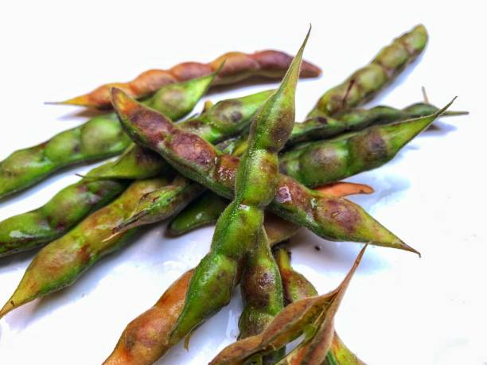
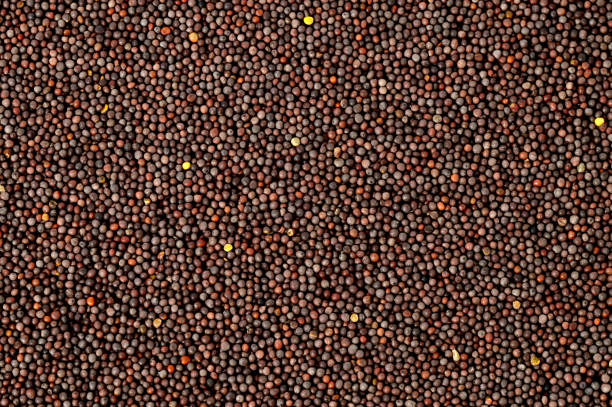

1.BLACK GRAM /1.BLACK GRAM a ni

Black gram, primarily grown in Mizoram, is cultivated mainly during the Kharif season, from June to September. It has significant market presence in states like Maharashtra and Karnataka, where it's both sold and cultivated extensively. This legume thrives in well-drained, loamy or sandy soils with a pH of 6-7. Optimal soil temperature ranges from 20°C to 30°C. Nutritionally, it’s rich in protein, fiber, and essential minerals. Growing black gram typically requires 70-90 days from sowing to harvest, with moderate water and nutrient inputs. Demand is highest in southern and western states like Tamil Nadu and Gujarat.
Black gram, Mizorama chin ber chu Kharif season, June atanga September thla thlenga chin ber a ni. Maharashtra leh Karnataka ang state-ah te market presence nasa tak a nei a, hetah hian hralh leh chin nasa tak a ni. He legume hi lei tui chhuahna tha, loamy emaw sandy leiah pH 6-7 ah a thang lian thin. Lei lumna tha ber chu 20°C atanga 30°C inkar a ni. Nutritional lamah chuan protein, fiber, leh mineral pawimawh tak tak a pai tam hle. Black gram chin hian a chin atanga a seng thlengin ni 70-90 vel a mamawh tlangpui a, tui leh nutrient input tlemte a awm bawk. Demand hi khawthlang leh chhim lam state Tamil Nadu leh Gujarat-ah a sang ber a ni.
2.GREEN GRAM / 2.GREEN GRAM a ni

Green gram, commonly grown in Mizoram, is primarily cultivated during the Kharif season, from June to September. It has a notable market share in states like Maharashtra and Karnataka, where it is both sold and extensively grown. This crop thrives in well-drained, loamy or sandy soils with a pH of 6-7. Optimal soil temperature is between 20°C to 30°C. Nutritionally, green gram is rich in protein, fiber, and vitamins. It typically takes 60-90 days to grow, requiring moderate water and nutrients. Demand is highest in southern states, particularly Tamil Nadu and Andhra Pradesh.
Mizorama chin tlanglawn tak, Green gram hi Kharif hunlai, June atanga September thla thlenga chin ber a ni. Maharashtra leh Karnataka ang state-ah te market share langsar tak a nei a, hetah hian hralh a ni a, nasa takin a chin bawk. He thlai hi lei tui chhuahna tha, loamy emaw sandy leia pH 6-7 ah a thang lian thin. Lei lumna tha ber chu 20°C atanga 30°C inkar a ni. Nutritional lamah chuan green gram hian protein, fiber leh vitamin te a pai tam hle. A tlangpuiin ni 60-90 vel a ngai a, tui leh nutrients tlemte a mamawh a ni. Demand hi khawthlang lam state-ah a sang ber a, a bik takin Tamil Nadu leh Andhra Pradesh-ah te mamawhna a sang ber a ni.
3.PIGEON PEA / 3.PIGEON PEA a ni

Pigeon pea, cultivated in Mizoram, is primarily grown during the Kharif season, from June to September. It has significant market share in states like Madhya Pradesh and Maharashtra, where it is both sold and cultivated. This legume prefers well-drained, loamy or sandy soils with a pH of 6-8. Optimal soil temperature ranges from 25°C to 30°C. Nutritionally, pigeon pea is high in protein, fiber, and essential nutrients. It typically requires 120-180 days to mature, needing moderate water and nutrients. Demand is particularly high in southern and central states, including Karnataka and Tamil Nadu.
Mizorama chin pigeon pea hi Kharif hun lai, June atanga September thla thlenga chin a ni ber. Madhya Pradesh leh Maharashtra ang state-ah te market share lian tak a nei a, hetah hian hralh leh chin a ni bawk. He legume hian lei tui chhuahna tha, loamy emaw sandy leilung pH 6-8 nei a duh zawk. Lei lumna tha ber chu 25°C atanga 30°C inkar a ni. Nutritional lamah chuan pigeon pea hian protein, fiber leh essential nutrients a pai tam hle. A tlangpuiin a puitlin nan ni 120-180 vel a mamawh a, tui leh nutrients tlemte a mamawh a ni. Demand hi a bik takin khawthlang lam leh central state-ah a sang hle a, Karnataka leh Tamil Nadu-ah te pawh mamawh a sang hle.
4.MUSTARD / 4.MUSTARD tih a ni

Mustard is primarily grown in Mizoram during the Rabi season, from November to March. It has a notable market share in states like Rajasthan and Haryana, where it is extensively cultivated and sold. Mustard thrives in well-drained, loamy or sandy soils with a pH of 6-7. Optimal soil temperature ranges from 15°C to 25°C. Nutritionally, it is rich in oil, protein, and essential fatty acids. The crop typically takes 90-120 days to mature, requiring moderate water and nutrient inputs. Demand is particularly high in northern states, especially in Punjab and Uttar Pradesh.
Mustard hi Mizoramah Rabi hun lai, November atanga March thla thlenga chin a ni ber. Rajasthan leh Haryana ang state-ah te market share langsar tak a nei a, hetah hian nasa takin chin leh hralh a ni. Mustard hi lei tui chhuahna tha, loamy emaw sandy leiah pH 6-7 ah a thang lian thin. Lei lumna tha ber chu 15°C atanga 25°C inkar a ni. Nutritional lamah chuan oil, protein leh essential fatty acids te a pai tam hle. Thlai hi a puitlin nan ni 90-120 vel a ngai tlangpui a, tui leh nutrient input tlemte a ngai a ni. Demand hi hmarchhak state-ah a sang hle a, a bik takin Punjab leh Uttar Pradesh-ah te mamawhna a sang hle.
5.GROUNDNUT / 5.LEI THIL THAWN THIN

Groundnut is primarily grown in Mizoram during the Kharif season, from June to September. It has a significant market presence in states like Gujarat and Andhra Pradesh, where it is both cultivated and sold extensively. Groundnut thrives in well-drained, sandy or loamy soils with a pH of 6-7. Optimal soil temperature ranges from 25°C to 30°C. Nutritionally, it is rich in protein, healthy fats, and vitamins. The crop typically takes 120-150 days to mature, requiring moderate water and nutrients. Demand is particularly high in southern and western states, especially Tamil Nadu and Maharashtra.
Groundnut hi Mizoramah Kharif hun lai, June atanga September thla thlenga chin a ni ber. Gujarat leh Andhra Pradesh ang state-ah te market-ah a awm nasa hle a, hetah hian chin leh hralhna nasa tak a awm bawk. Groundnut hi lei tui chhuahna tha, sandy emaw loamy leiah pH 6-7 ah a thang lian thin. Lei lumna tha ber chu 25°C atanga 30°C inkar a ni. Nutritional lamah chuan protein, thau hrisel, leh vitamin te a pai tam hle. Thlai hi a puitlin nan ni 120-150 vel a ngai tlangpui a, tui leh nutrients tlemte a mamawh a ni. Demand hi a bik takin khawthlang leh chhim lam state-ah a sang hle a, a bik takin Tamil Nadu leh Maharashtra-ah te mamawhna a sang hle.
6.SUGARCANE / 6.SUGARCANE THIL THAWN THIN


Sugarcane is primarily grown in Mizoram during the Kharif season, from June to November. It has a notable market share in states like Uttar Pradesh and Maharashtra, where it is extensively cultivated and sold. Sugarcane thrives in well-drained, sandy loam or clay soils with a pH of 6-8. Optimal soil temperature ranges from 20°C to 30°C. Nutritionally, it is high in sucrose, providing energy and essential minerals. The crop typically requires 12-18 months to mature, needing substantial water and nutrients. Demand is particularly high in states like Maharashtra and Karnataka, where sugar production is significant.
Sugarcane hi Mizoramah Kharif season, June atanga November thla thlenga chin a ni ber a. Uttar Pradesh leh Maharashtra ang state-ah te market share langsar tak a nei a, hetah hian nasa takin chin leh hralh a ni. Sugarcane hi tui chhuahna tha tak, sandy loam emaw leilung pH 6-8 ah a thang lian thin. Lei lumna tha ber chu 20°C atanga 30°C inkar a ni. Nutritional lamah chuan sucrose a pai tam hle a, chakna leh mineral pawimawh tak tak a pe a ni. Thlai hi a puitlin nan thla 12-18 vel a ngai tlangpui a, tui leh ei tur tha tak tak a mamawh a ni. A bik takin Maharashtra leh Karnataka ang state-ah chuan mamawhna a sang hle a, sugar tharchhuah a tam hle.
7.BAMBOO / 7.BAMBOO a ni

Bamboo is grown in Mizoram throughout the year, with peak growth occurring during the monsoon season from June to September. It has a significant market share in states like Assam and Meghalaya, where it is widely cultivated and sold. Bamboo prefers well-drained, loamy or sandy soils with a pH of 5.5-7.5. Optimal soil temperature ranges from 20°C to 30°C. Nutritionally, bamboo shoots are low in calories and high in fiber, vitamins, and minerals. It typically takes 3-5 years to mature, requiring moderate water and maintenance. Demand is particularly high in northeastern states and across India for construction and crafts.
Bamboo hi kum khat chhungin Mizoramah chin a ni a, a peak growth hi June atanga September thla chhungin Monsoon season-ah a awm thin. Assam leh Meghalaya ang state-ah te market share lian tak a nei a, hetah hian nasa takin chin leh hralh a ni. Bamboo hian lei tui chhuahna tha, loamy emaw sandy leilung pH 5.5-7.5 a duh zawk. Lei lumna tha ber chu 20°C atanga 30°C inkar a ni. Nutritional lamah chuan bamboo hnah hian calorie a tlem a, fiber, vitamin leh mineral a pai tam bawk. A tlangpuiin a puitlin nan kum 3-5 vel a ngai a, tui tlem leh enkawl a ngai thin. A bik takin hmarchhak state leh India ram pumah in sak leh kut hnathawh mamawhna a sang hle.
8.ARECANUT / 8.ARECANUT tih a ni

Arecanut is primarily grown in Mizoram during the Kharif season, with planting usually occurring from May to June. It has a significant market share in states like Karnataka and Kerala, where it is extensively cultivated and sold. Arecanut thrives in well-drained, loamy or sandy soils with a pH of 5.5-7.5. Optimal soil temperature ranges from 25°C to 30°C. Nutritionally, arecanut is rich in carbohydrates, fiber, and various minerals. It typically takes 5-7 years to mature, requiring substantial water and care. Demand is particularly high in southern states, especially for traditional uses in betel nut preparations.
Arecanut hi Mizoramah Kharif season-ah chin a ni ber a, May thla atanga June thla thlenga phun a ni tlangpui. Karnataka leh Kerala ang state-ah te market share lian tak a nei a, hetah hian nasa takin chin leh hralh a ni. Arecanut hi lei tui chhuahna tha, loamy emaw sandy leiah pH 5.5-7.5 ah a thang lian thin. Lei lumna tha ber chu 25°C atanga 30°C inkar a ni. Nutritional lamah chuan arecanut hian carbohydrates, fiber, leh mineral hrang hrang a pai tam hle. A tlangpuiin kum 5-7 vel a ngai a, tui leh enkawlna tam tak a ngai a ni. Khawchhak state-ah chuan mamawhna a sang hle a, a bik takin betel nut siamna atana hmanlai hman tur a ni.
9.JUTE / 9.JUTE a ni


Jute is primarily grown in Mizoram during the Kharif season, from June to October. It has a significant market share in states like West Bengal and Assam, where it is extensively cultivated and sold. Jute thrives in well-drained, alluvial soils with a pH of 6-8. Optimal soil temperature ranges from 25°C to 35°C. Nutritionally, jute fibers are not consumed but are valued for their eco-friendly properties. The crop typically takes 120-150 days to mature, requiring moderate water and nutrients. Demand is particularly high in eastern and northeastern states for packaging and textile industries.
Jute hi Mizoramah Kharif hun lai, June atanga October thla thlenga chin a ni ber. West Bengal leh Assam ang state-ah te market share lian tak a nei a, hetah hian nasa takin chin leh hralh a ni. Jute hi tui luang chhuak tha, alluvial soil pH 6-8 ah a thang lian thin. Lei lumna tha ber chu 25°C atanga 35°C inkar a ni. Nutritional lamah chuan jute fiber hi ei lo mahse eco-friendly property a neih avangin a hlu hle. Thlai hi a puitlin nan ni 120-150 vel a ngai tlangpui a, tui leh nutrients tlemte a mamawh a ni. A bik takin hmarchhak leh hmarchhak state-ah chuan packaging leh textile industry mamawhna a sang hle.